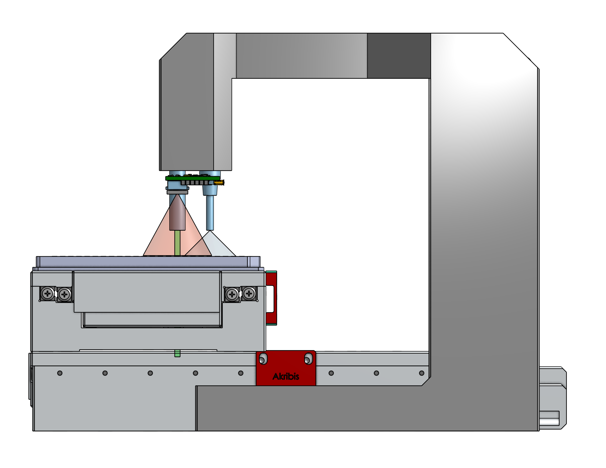
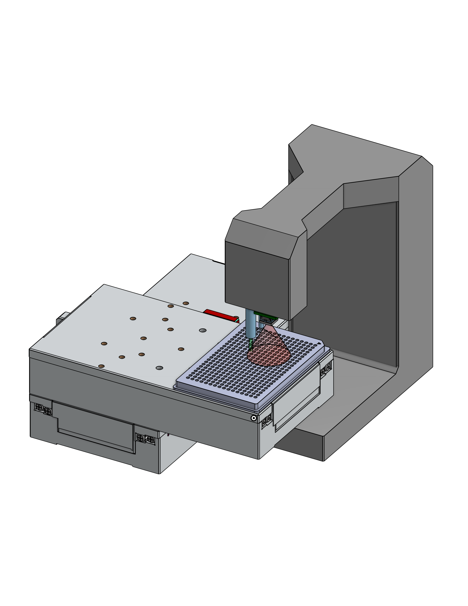

 
Add quality control to your assays with Monomer's Liquid Monitor Sensors. These sensors can be used as a standalone device or they can be mounted right on top of your existing instruments. Don't wait till the end of all your experiments to find out about evaporative edge effects or clogged nozzles. Discover those failure modes right when and where they happen. Reagent dispensing has been known to vary by as much as 10% over a 1-day time period. Use our analysis tools to see trends in your own lab over time or across plates for yourself. Get peace of mind that you are drawing real biological conclusions from your data rather than interpreting liquid handling aberrations.
Measuring inline ensures all dispenses are automatically scanned. Labware is scanned on the instrument as its tray extends. Cross reference with commanded volumes and get notified when the dispensing cassette needs to be replaced rather than relying on an arbitrary monthly calendar event. Sensors can be mounted on your existing instruments directly. This obviates needing to make space for an additional instrument or program extra robot arm movements. We support the following devices for inline verification:

All dimensions in millimeters.
Use the adjustment screws on the top of the station to set the reference mounting distance of the sensors above microtiter plate wells or tubes.

Power: 15-30 V DC, <=35 mA per sensor
Portrait mode (8 sensors): 280 mA
Landscape mode (12 sensors): 420 mA
| Labware Type | Precision [%] | Accuracy [%] | Precision [uL] | Accuracy [uL] | Max Volume [uL] | Notes |
|---|---|---|---|---|---|---|
| Micronic 1.40 ml tubes | 2 | 2 | 20 | 20 | 1400 | Determined by independent party (Ginkgo Bioworks) |
| 384-well v-bottom (Greiner 781281) | 2.77 | 2.38 | 0.36 | 3.10 | 130 | Data here |